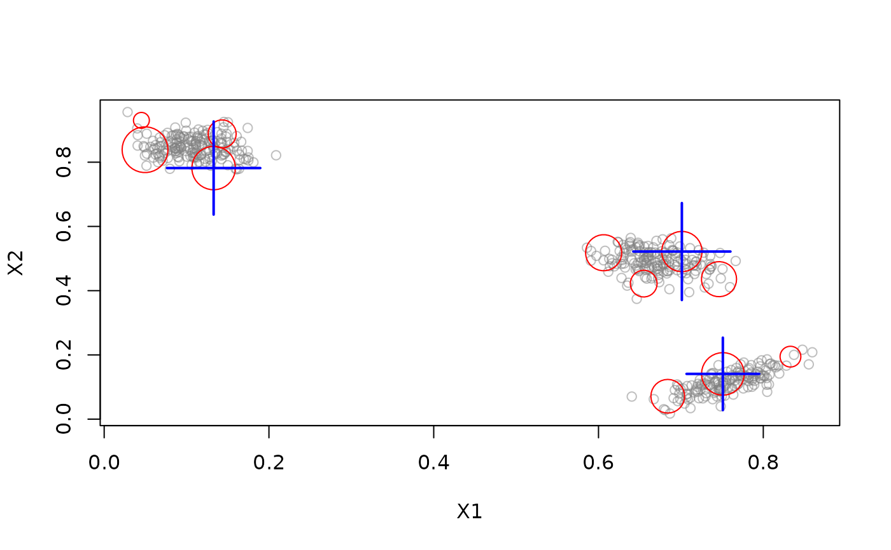
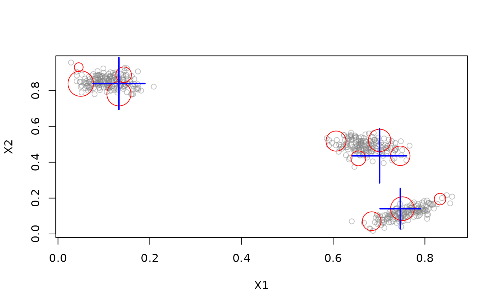
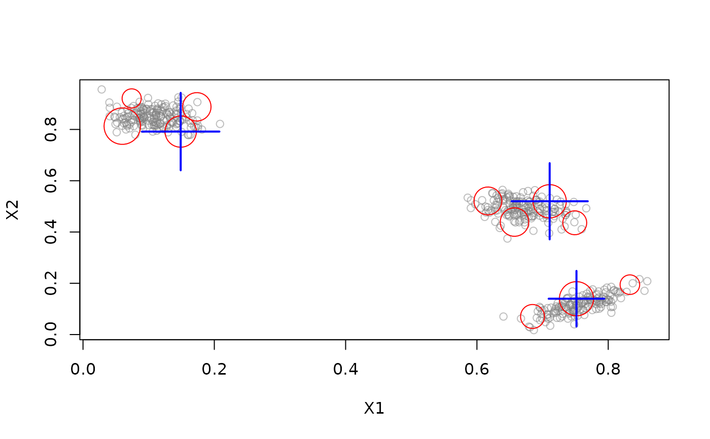

Macro Clusterer.
Usage
DSC_EA(
formula = NULL,
k,
generations = 2000,
crossoverRate = 0.8,
mutationRate = 0.001,
populationSize = 100
)Arguments
- formula
NULLto use all features in the stream or a model formula of the form~ X1 + X2to specify the features used for clustering. Only.,+and-are currently supported in the formula.- k
number of macro-clusters
- generations
number of EA generations performed during reclustering
- crossoverRate
cross-over rate for the evolutionary algorithm
- mutationRate
mutation rate for the evolutionary algorithm
- populationSize
number of solutions that the evolutionary algorithm maintains
Details
Reclustering using an evolutionary algorithm. This approach was designed for
evoStream (see DSC_evoStream) but can also be used for other micro-clustering algorithms.
The evolutionary algorithm uses existing clustering solutions and creates small variations of them by combining and randomly modifying them. The modified solutions can yield better partitions and thus can improve the clustering over time. The evolutionary algorithm is incremental, which allows users to improve existing macro-clusters instead of recomputing them every time.
References
Carnein M. and Trautmann H. (2018), "evoStream - Evolutionary Stream Clustering Utilizing Idle Times", Big Data Research.
See also
Other DSC_Macro:
DSC_DBSCAN(),
DSC_Hierarchical(),
DSC_Kmeans(),
DSC_Macro(),
DSC_Reachability(),
DSC_SlidingWindow()
Author
Matthias Carnein Matthias.Carnein@uni-muenster.de
Examples
stream <- DSD_Gaussians(k = 3, d = 2) %>% DSD_Memory(n = 1000)
## online algorithm
dbstream <- DSC_DBSTREAM(r = 0.1)
## offline algorithm (note: we use a small number of generations
## to make this run faster.)
EA <- DSC_EA(k = 3, generations = 100)
## create pipeline and insert observations
two <- DSC_TwoStage(dbstream, EA)
update(two, stream, n = 1000)
two
#> DBSTREAM + EA - Reclustering using an evolutionary algorithm
#> Class: DSC_TwoStage, DSC_Macro, DSC
#> Number of micro-clusters: 11
#> Number of macro-clusters: 3
## plot result
reset_stream(stream)
plot(two, stream)

## if we have time, evaluate additional generations. This can be
## called at any time, also between observations.
two$macro$RObj$recluster(100)
## plot improved result
reset_stream(stream)
plot(two, stream)

## alternatively: do not create twostage but apply directly
reset_stream(stream)
update(dbstream, stream, n = 1000)
recluster(EA, dbstream)
reset_stream(stream)
plot(EA, stream)
